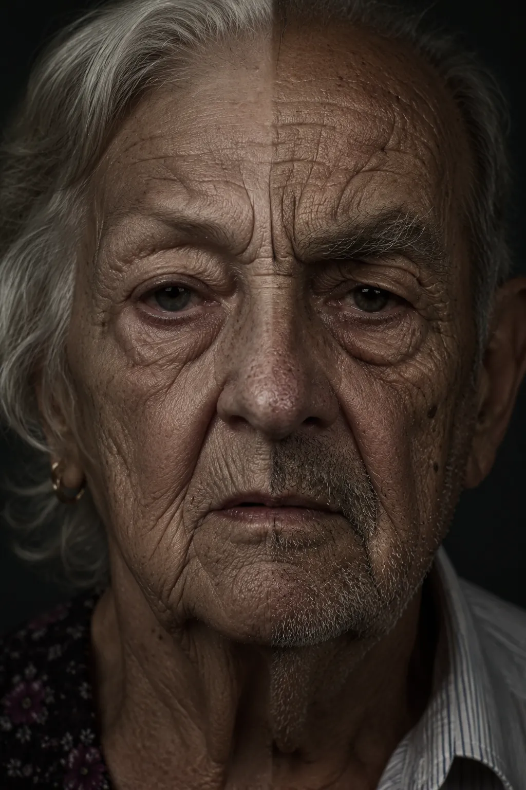
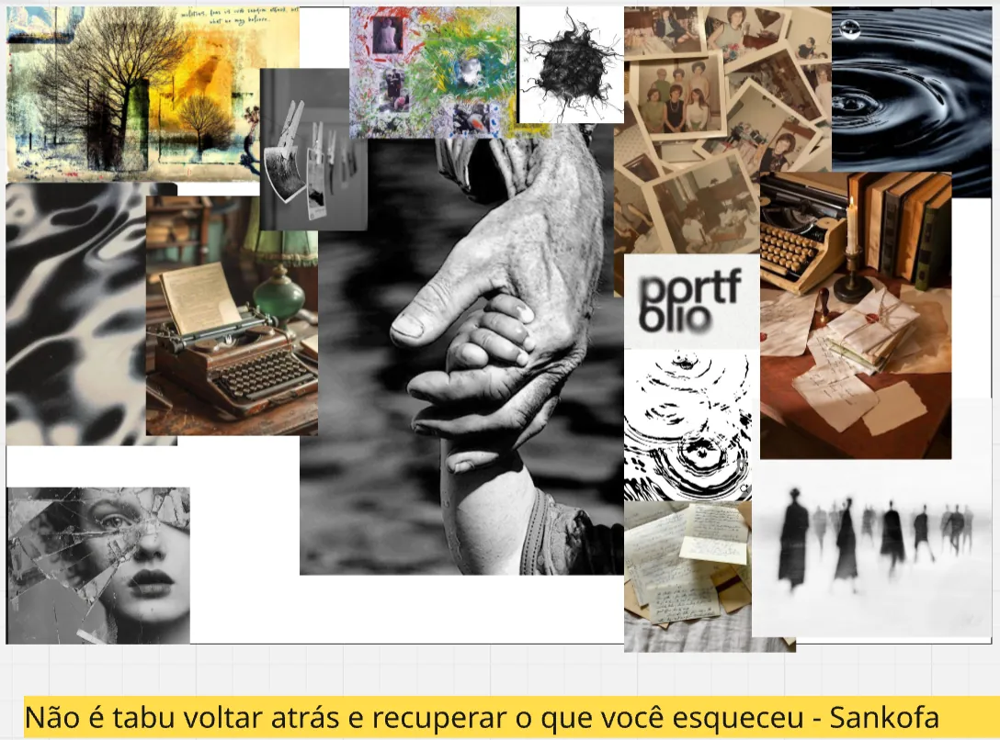
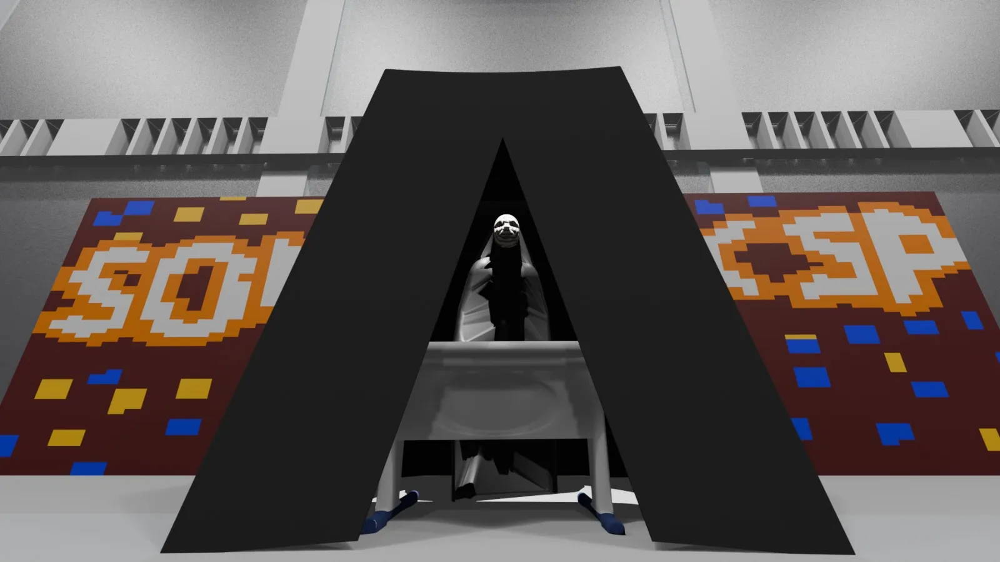
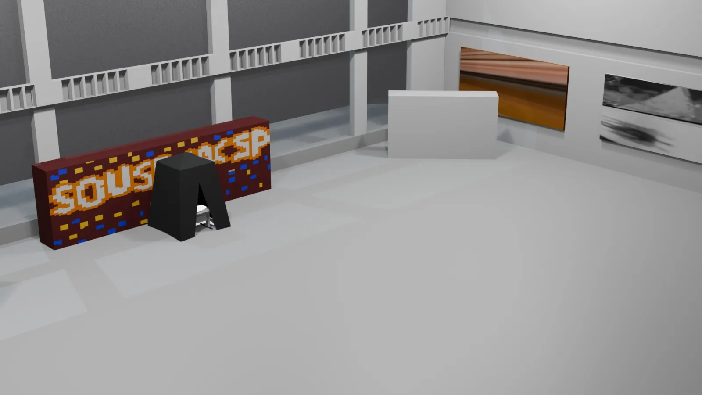
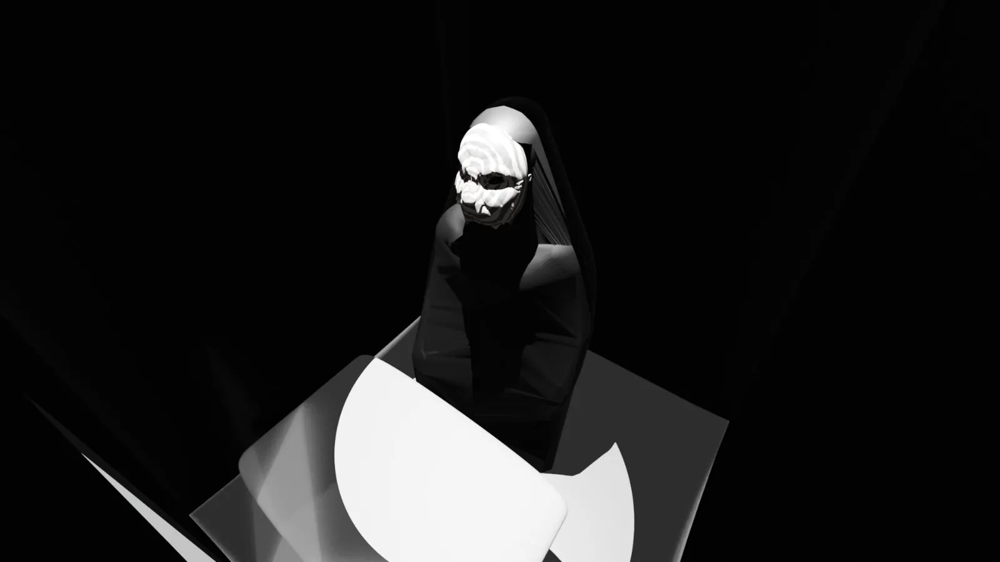
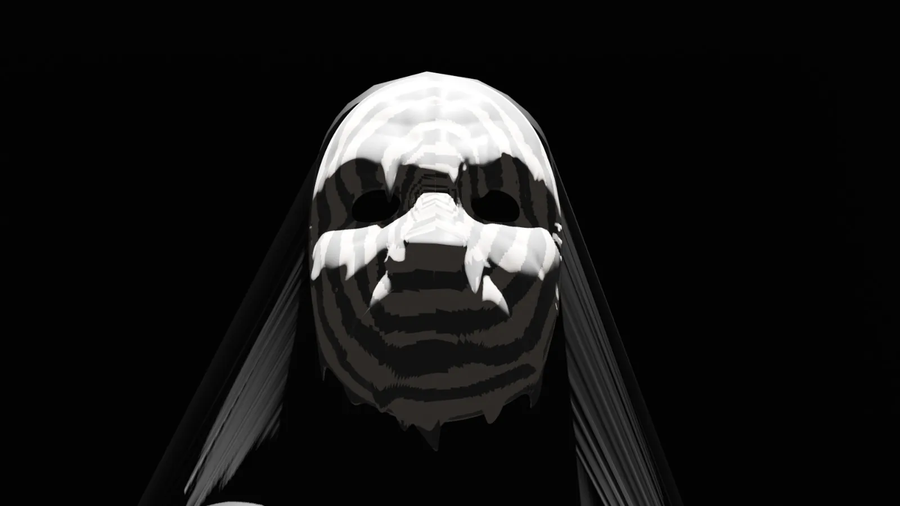
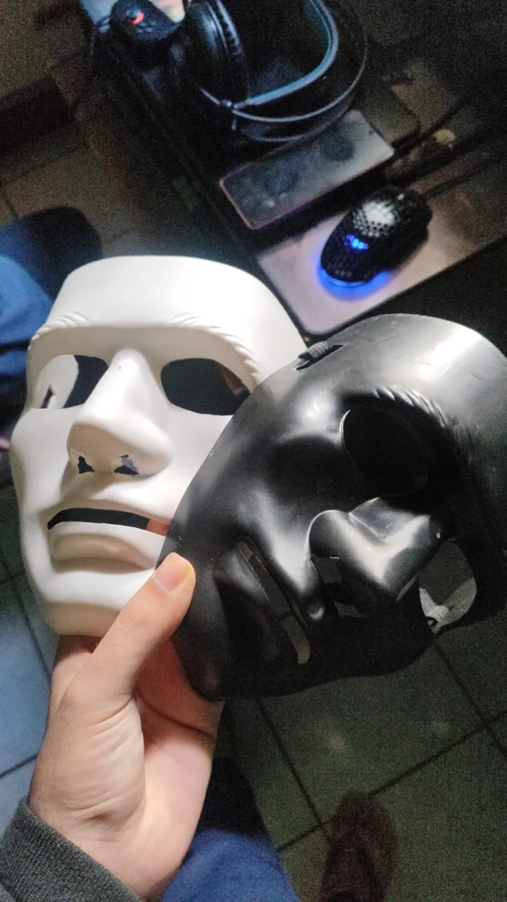
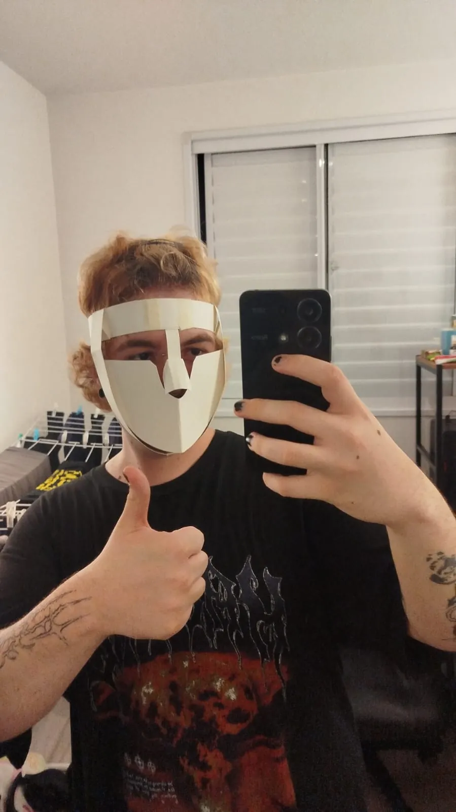

Memória
Mesmo esquecida, ela sobrevive no corpo, nos hábitos e nas pessoas ao redor.


Uma instalação imersiva que transforma o esquecimento do Alzheimer em experiência: uma sala escura, uma entidade mascarada e memórias que se recusam a desaparecer.
Participei de todas as etapas, da ideação à montagem, e liderei a modelagem 3D da máscara e do espaço.
Como fazer alguém sentir o esquecimento, e não só entendê-lo?
O Alzheimer apaga nomes, rostos e histórias. O desafio era criar um espaço onde quem entra percebe que a memória não some: ela muda de forma, e continua no corpo e no afeto.
Partimos de uma ideia simples: a memória não desaparece, ela se transforma. Dela nasceram os três pilares da instalação.
Mesmo esquecida, ela sobrevive no corpo, nos hábitos e nas pessoas ao redor.
Um espaço onde as memórias persistem e tocam quem entra. A entidade não esquece: ela guarda.
Preservar o passado é construir o amanhã. O visitante sai levando um fragmento do que a entidade guarda.

Projetei o espaço em 3D para testar escala, circulação e luz antes da montagem: araras e cortinas pretas, iluminação mínima e uma entrada em forma de A que marca o início do rito de passagem.



O escuro cria expectativa. Começa o rito de passagem.
A luz revela a entidade. Música e poesia preenchem o ar.
O visitante encontra a entidade: um ser de memórias que não se apagaram.
O que ficou de quem passou por você? Memória é corpo, toque e afeto.
Modelei a máscara com aspecto derretido e envelhecido: a memória em dissolução, não um fim. Os testes com máscaras prontas e em papel guiaram o volume final, vestido pela entidade que recebe o visitante.



Porque nenhuma memória some.
Ela apenas muda de forma.